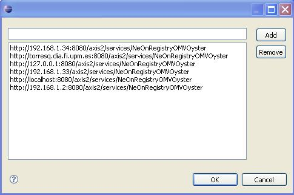

The NeOn Toolkit Oyster GUI connects to a server to perform almost any operation. These are submit metadata, update metadata, delete metadata and query for instances of omv classes.
When performing any operation that needs to connect to a server, there will be always the chance to select it, or to edit the list of servers. This page presents two examples, and the same composites are used across every funcion's interface, so it's always the same.
There will be always a combo holding the list of known servers, like this one:
To select the server just click on it and a complete list of all known servers will be shown.
At any time when the server selection combo is displayed, there will be also an edit button, to let
you change the known servers list. Clicking on it will show the following dialog:

This dialog lets the user type a new URL in the text box (in the top of the dialog) and add it
to the list using the add button, and select a server of the list and remove it using the remove
button.